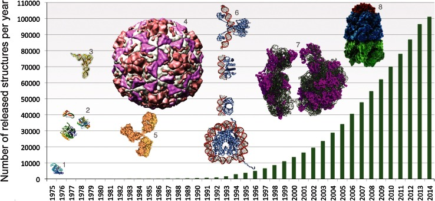

Proteins are the foundation of biology, orchestrating nearly every function in our cells. Yet, understanding their structure and function has been a mammoth challenge. The hypothesis that a protein’s structure is determined by the sequence of amino acids that make it up, led Christian Anfinsen to the 1972 Nobel Prize in Chemistry. Ever since, scientists have sought to solve the “protein folding problem” - predicting how a seemingly linear chain of amino acids folds into the unique 3D shape that dictates each protein’s role. With the recent convergence of artificial intelligence and biology, giant strides are being made in the field at a pace that was unimaginable even just a few years ago. This post aims to unpack the tech behind these advances, starting with the fundamental problem itself.
Predicting protein structure is challenging because proteins, composed of amino acid chains, fold into complex shapes immediately upon formation. These shapes, or "conformations," define each protein's function. Determining how the complex folding occurs from the amino acid sequence alone is a significant challenge. If we knew the 3D structure of any protein, we could understand its function and gain insights into processes like disease mechanisms, drug binding, and synthetic bioengineering.
The applications of protein structure prediction are vast, but the scientific problem itself has been famously difficult for several reasons:
Advances in genomics, proteomics and molecular biology have generated vast datasets over the years. Numerous experimental procedures have helped scientists accurately determine the structure of a vast array of proteins, which have been added to the Protein Data Bank. However, traditional lab-based techniques, like X-ray crystallography and nuclear magnetic resonance (NMR) spectroscopy, are precise but time-intensive and costly, making them impractical for studying the countless unique proteins found in nature.
PDB database size over the years - The Protein Data Bank archive as an open data resource, Berman et. al.
Artificial intelligence, particularly deep learning, has redefined what’s possible in protein structure prediction. By analyzing vast datasets of protein sequences and structures, AI models can recognize patterns linking sequence to shape. This approach bypasses brute-force simulations, instead leverages statistical patterns and biological principles present in data, thereby drastically improving prediction speeds and accuracy.
AlphaFold (from DeepMind), a pioneering AI model for protein structure prediction, has achieved breakthrough results by treating protein sequences as if they were languages. This approach leverages the principles of language modeling to predict protein structures based on patterns in amino acid sequences. Here’s how AlphaFold works:
AlphaFold interprets amino acid sequences like sentences, learning relationships between amino acids to predict spatial interactions in the folded structure. To be more precise – the amino acids in each peptide or protein sequence can be thought of to be analogous to the alphabet characters in natural language.
AlphaFold2 uses multiple sequence alignment (MSA), where many similar protein sequences are set alongside each other. By comparing and analyzing sequences of similar proteins, AlphaFold2 can identify evolutionary relationships between different proteins. A high-quality MSA is essential for AlphaFold2's accurate predictions and serves as a key input to the model's neural network, known as the Evoformer.
The Evoformer network interprets and updates both the MSA and a unique feature called "pair representations." In AlphaFold2, every pair of amino acid residues in the protein, regardless of distance, is represented separately, enabling the software to encode relationships between them. This information can ultimately be interpreted as the relative positions and distances between amino acids, refining the structural hypothesis. Evoformer’s continuous flow of information between the MSA and these pair representations allows it to reason about spatial relationships, thereby enhancing the model’s prediction accuracy.
These alignment and pair representation mechanisms are conceptually similar to the attention mechanisms used in transformer models, enabling AlphaFold2 to focus on specific regions of the sequence that are structurally significant. In a naive transformer model, this is achieved by assigning weights to particular parts of the sequence to prioritize amino acids likely to interact and form bonds. This selective focus is especially useful for interpreting complex protein structures, ultimately enhancing the model's ability to make precise predictions.
Trained on extensive protein structure databases, AlphaFold generalizes to unseen sequences, resolving structural ambiguities without experimental validation. As a result, AlphaFold predicts structures for thousands of proteins, including many previously unknown, with remarkable accuracy and speed. The latest version of the AlphaFold model, AlphaFold3 which introduces the Pairformer model in conjunction with difusion, is not limited to just single-chain proteins, but can also deal with and predict structures of complexes with DNA, RNA and some selected ligands and ions as well.
AlphaFold’s AI models have opened doors previously considered closed. Some notable impacts include:
While AlphaFold’s impact is transformative, challenges remain. Currently, AlphaFold predicts static structures, while proteins are dynamic and often change shape based on their cellular environment. Future AI models may incorporate this flexibility, predicting multiple conformations or simulating environmental responses to capture proteins’ dynamic nature.
← Back to Blog